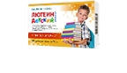
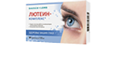

Задать вопрос производителю
Защита глаз
при интенсивных нагрузках
при интенсивных нагрузках
Усталость


укрепление сосудов
глаз
глаз
Защита здорового зрения
на долгие годы
на долгие годы
Снижение риска развития
возрастных изменений глаз
возрастных изменений глаз
Группы риска:
Школьники и студенты
В последнее десятилетие врачи отмечают печальную тенденцию: все чаще у детей школьного возраста выявляются болезни органов зрения. Сложный оптический прибор, идеально приспосабливающийся к изменчивым условиям окружающей среды, глаз оказался не подготовленным к современным реалиям.
Работающие за компьютером
Школьники и студенты
Автолюбители
Люди с повышенными зрительными нагрузками
Туристы
On-line тест
Мы предлагаем пройти небольшой тест, который поможет легко и комфортно проверить остроту, контрастность и цветовосприятие вашего зрения.
Если по результатам теста Вы отметите ухудшение зрения, Вам следует обратиться к офтальмологу за дополнительной консультацией.
Где купить
Препараты можно преобрести в аптеках по всей России,
а так же в интернет аптеках
а так же в интернет аптеках